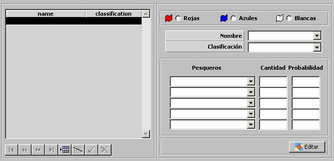

Zonas de Esfuerzo Pesquero

Mediante esta tabla se especifican todas las Zonas de Esfuerzo Pesquero incluidas en el Ejercicio. Para cada una de ellas, se crearán al inicio del Ejercicio un número aleatorio de pesqueros de cada tipo según el % de probabilidad especificado, situados inicialmente en posiciones aleatorias dentro de la zona geográfica definida, y que durante el Ejercicio se moverán con rumbo y velocidad aleatorios pero manteniéndose siempre dentro de dicha zona. Los pesqueros encenderán o apagarán sus radares aleatoriamente.
Durante la ejecución del ejercicio, a cada unidad se le presenta en la Pantalla Táctica las Zonas de Esfuerzo Pesquero correspondientes a su bando y al bando neutral.
Para cada zona se especifican los siguientes parámetros:
Pesqueros: Este parámetro determina los tipos de pesqueros (hasta cinco) que se crearán en la Zona de Esfuerzo Pesquero. Se podrá seleccionar de entre todas las unidades de superficie ya incluidas en el Ejercicio, cuya plataforma sea de Tipo de Plataforma igual a Pesquero (ver apartado Plataformas de Superficie).
Cantidad: Este parámetro determina la cantidad máxima de cada tipo de pesqueros que se crearán en la Zona de Esfuerzo Pesquero.
Probabilidad: Este parámetro introduce un elemento de aleatoriedad en la cantidad de cada tipo de pesqueros creados una ejecución del Ejercicio, de tal manera que cada vez que se ejecute este Ejercicio el número de pesqueros creados en la Zona de Esfuerzo Pesqueros puede ser distinto.
Ejemplo:
Para una cantidad de 10, en cada ejercicio:
Si Probabilidad = 0 % ⇒ No se crea ningún pesquero nunca.
Si Probabilidad = 50 % ⇒ Se crean aproximadamente 5 pesqueros.
Si Probabilidad = 100 % ⇒ Se crean 10 pesqueros siempre.
Para una cantidad de 50, en cada ejercicio:
Si Probabilidad = 0 % ⇒ No se crea ningún pesquero nunca.
Si Probabilidad = 10 % ⇒ Se crean aproximadamente 5 pesqueros.
Si Probabilidad = 100 % ⇒ Se crean 10 pesqueros siempre.
Debe tenerse en cuenta el error cometido con respecto al valor esperado según el porcentaje, será menor mientras mayor sea la Cantidad.
Editar: Mediante este botón se abre la ventana de Preparación de Escenarios, sobre la que se mostrará una Herramienta de Dibujo con la que se podrá especificar gráficamente la zona geográfica en la que se crearán los pesqueros. Ver la descripción de esta herramienta en el apartado Preparación de Escenario.